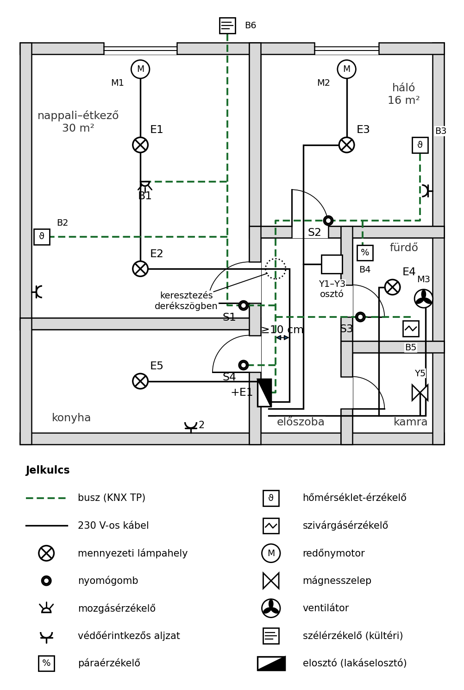

Egy felújított családi házban a tulajdonos csak egy dolgot szeretne: minden funkciót egyetlen felületről – vagy akár automatikusan – vezérelni. Reggel a redőny felmegy, a fűtés a nappali hőmérsékletet hozza, a biztonsági rendszer kikapcsol, este pedig a mozgásérzékelő csak a szükséges helyen kapcsolja a villanyt. Villanyszerelőként nem elég tudni, hogyan kell bekötni egy kapcsolót vagy egy mágneskapcsolót – azt is érteni kell, hogyan épül fel egy buszrendszer, hogyan választjuk el az erősáramú és az automatizálási kábelezést, és hogyan bizonyítjuk az üzembe helyezés során, hogy minden úgy működik, ahogy a megrendelő kérte. Ez az alfejezet a KNX, DALI és más épületautomatikai rendszerek alfejezetre épít, és abból a szempontból tárgyalja az intelligens épületet, hogy a szerelő milyen tervet készít, milyen lépésekkel helyezi üzembe, és hogyan számolja ki, mekkora energia-megtakarítást ér el a rendszer.
Az intelligens épület nem egyetlen termék, hanem több, egymással kommunikáló alrendszer összessége:
Ezek a rendszerek jellemzően közös buszon kommunikálnak. A KNX, DALI és más épületautomatikai rendszerek alfejezetben megismertük a KNX, DALI és más buszok alapjait. Itt a tervezési és üzembe helyezési kérdésekre koncentrálunk.
Hogy a busz és a 230 V-os hálózat hogyan fér meg egymás mellett egy valódi lakásban, azt az alábbi kábelezési terv mutatja.

Ábraolvasás. A buszkábel (szaggatott) fa-topológiában indul az előszobai +E1 elosztóból, és csak az érzékelőkhöz, nyomógombokhoz jut el (S1–S4, B1 jelenlét-, B2–B3 hőmérséklet-, B4 pára-, B5 szivárgás-, B6 kültéri szélérzékelő); a beavatkozók – lámpák (E1–E5), redőnymotorok (M1–M2), a fürdő ventilátora (M3), a padlófűtési osztó szelepei (Y1–Y3) és a hidegvíz-főcsap mágnesszelepe (Y5) – 230 V-os kábelt kapnak az elosztóban ülő aktorokból. A busz tehát nem helyettesíti az erősáramú hálózatot, hanem mellette fut: a 230 V a fogyasztók energiáját, a busz a vezérlési üzeneteket viszi. Ahol a két nyomvonal keresztezi egymást, derékszögben keresztezzék, párhuzamos szakaszon pedig tartsanak távolságot (a rajzon ≥ 10 cm, ellenőrizendő: KNX telepítési irányelv, gyártói előírás). Keresd meg a rajzon: melyik helyiségbe nem megy buszkábel, és miért?
Szabály. A tervezés első lépése a funkciólista és a felhasználói elvárások rögzítése, majd az érzékelők és beavatkozók kiválasztása, végül a kábelezési útvonalak és az elosztó kialakítása.
Egy tipikus lakás vázlata:
A tervben minden elemet referenciajelöléssel látunk el (például
B1 fényérzékelő, K1 (vagy A1)
világítási kapcsolóaktor, M1 redőnymotor), és a
buszkábelezést külön színnel, vagy külön vonaltípusban jelöljük. A
következő lépés a busz és az erősáramú hálózat kábelezésének
megtervezése.
Definíció. Az erősáramú hálózat a 230/400 V-os hálózati feszültségű vezetékeket jelenti, míg a buszrendszer – tipikusan SELV/PELV törpefeszültség, például KNX esetén 29 V DC, DALI esetén nem leválasztott, de a gyártói előírás szerint szerelendő – a vezérlési jeleket szállítja. Elválasztásnak nevezzük azokat a szerelési intézkedéseket, amelyek megakadályozzák, hogy a két hálózat feszültségszintjei, tranziens zavarai vagy hibái egymásra hassanak.
Szabvány. A kisfeszültségű villamos berendezések szerelési előírásai (MSZ HD 60364‑5‑52) és a gyártói adatlapok rögzítik a kábeltípusokat és a minimális távolságokat. Mindig az aktuális szabványkiadás és a gyártói utasítás az irányadó; az itt megadott értékek szemléltető példák (ellenőrizendő).
Szabály. A gyakorlatban a következő elválasztási módokat alkalmazzuk:
Az elválasztás gyakorlati megoldásait és a tipikus hibákat az alábbi hat kép mutatja (a KNX-kábel zöld köpenyű, piros-fekete erekkel). Az 1. kép az 1. szabályt mutatja: válaszfalas kábelcsatorna, a két kábelfajta külön rekeszben; a 2. képen a hibás, közös védőcső látható. A 3. kép a 2. és 3. szabályt mutatja: távolság a párhuzamos szakaszon, keresztezés derékszögben; a 4. képen a több méteren át, közös tálcán, szorosan vezetett kábelek – ez a lenti valós eset hibája. Az 5. képen a buszcsatoló saját szerelvénydobozban ül, a 230 V-os kötések külön dobozban; a 6. képen a busz és a hálózati erek közös kötődobozba kerültek, ahol egy szigetelési hiba a hálózati feszültséget a SELV-buszkörre juttathatja.
A szemrevételezésnél (lásd a feladatgyűjteménybeli (20.4) gyakorlati útmutató 2. lépését) éppen ezeket a pontokat ellenőrizzük. A HTML-kiadásban a képek egyenként léptethetők.
Indoklás. A zavaró forrás a hálózati kábelben folyó váltakozó áram mágneses tere, valamint a kapcsolási tranziensek és túlfeszültségek. Ha a buszvezeték ezek közelében fut, a kommunikáció megszakadhat, a DALI jelek hibásan értelmeződnek, vagy a rendszer összeomlik. A szétválasztás nemcsak a zavarvédelmet, hanem a szerelési biztonságot is szolgálja: hiba esetén a 230 V ne juthasson át a törpefeszültségű (SELV/PELV) buszkörre.
Az üzembe helyezésnél a korábban tanult öt biztonsági szabályt alkalmazzuk, még akkor is, ha a buszrendszer törpefeszültségű – az erősáramú hálózattal közös elosztóban a hálózat lekapcsolása nélkül nem dolgozunk.
Biztonsági korlát. A feladat tanműhelyi (törpefeszültségű) környezetre vagy jogosult oktató felügyeletére vonatkozik; hálózati feszültségen önállóan ne végezd.
A funkciótesztet előre megírt lista szerint végezzük: minden sorban ott a kiváltó művelet és az elvárt reakció, a helyszínen csak a tapasztaltat és az értékelést kell beírni. A villamos mérések (szigetelés, hurokimpedancia, FI) külön jegyzőkönyvbe kerülnek (Jegyzőkönyv, szabványossági felülvizsgálat és hibakeresés). Üres funkcióteszt-lap: Nyomtatható jegyzőkönyvek és sablonok, C6. A sablon az esettanulmány funkcióira (példaadatok):
| Ssz. | Funkció | Kiváltó művelet | Elvárt reakció | Tapasztalt | I/N | Megjegyzés |
|---|---|---|---|---|---|---|
| 1 | F01 | S1 bal gomb, rövid | E1 be, S1 LED világít | |||
| 2 | F02 | S1 jobb gomb, hosszú | E2 fényereje változik | |||
| 3 | F03 | S4, S2, S3 gombjai | a saját lámpa kapcsol | |||
| 4 | F04 | központi LE gomb | M1, M2 le, végálláson megáll | |||
| 5 | F05 | szélriasztás szimulálása (B6 teszt) | redőnyök fel, helyi LE tiltva | |||
| 6 | F09 | S4 „távozás” | minden lámpa ki, csökkentett fűtés | |||
| 7 | F10 | víz a B5 érzékelőn | Y5 zár ≤ 5 s alatt, jelzés | |||
| 8 | – | buszfeszültség ki, majd vissza | aktorok a paraméterezett állapotba |
Átadási jegyzőkönyv – fejléc és mellékletek.
| Rovat | Bejegyzés |
|---|---|
| létesítmény, cím; megrendelő | |
| kivitelező, vizsgálatot végző, jogosultság | |
| dátum; az ETS-projekt verziója | |
| eredmény: a vizsgált sorok száma, megfelelt / nem felelt meg | |
| nyitott hibák, javítási határidő, újrateszt | |
| mellékletek: funkcióteszt-lista, mérési jegyzőkönyv, címlista, paraméterlista, rajzok, ETS-fájl | |
| felhasználói oktatás megtörtént (megrendelő aláírása) | |
| aláírások |
Kitöltős feladat (C). Egy átadás előtt a következő kitöltött listát kapod. Keresd meg a három hibát, és mondd meg, mi a teendő!
| Ssz. | Elvárt reakció | Tapasztalt | I/N |
|---|---|---|---|
| 1 | E1 be, S1 LED világít | E1 be, LED világít | I |
| 2 | E2 fényereje változik | változik | I |
| 3 | a saját lámpa kapcsol | mindhárom jó | I |
| 4 | M1, M2 le, végálláson megáll | jó | I |
| 5 | redőnyök fel, helyi LE tiltva | a redőnyök lefelé indultak | I |
| 6 | minden lámpa ki, csökkentett fűtés | jó | I |
| 7 | Y5 zár ≤ 5 s alatt, jelzés | zárt 40 s után, jelzés jött | I |
| 8 | aktorok a paraméterezett állapotba |
Megoldás: 5. sor: a tapasztalt reakció ellentétes az elvárttal (biztonsági funkció), mégis „I”: helyesen N; a redőnyaktor prioritásparaméterét és a motor irányát javítani kell. 7. sor: a zárás ideje 40 s, az elvárt legfeljebb 5 s: helyesen N; ellenőrizni kell az érzékelő küldési paraméterét, a csoportcímet, az időzítést és a szelepet. 8. sor: a buszfeszültség-visszatérés tesztje kimaradt (üres sor), pótolni kell. A javítás után a hibás sorokat (és az érintett funkciókat) újra kell tesztelni; addig az átadás nem zárható le, legfeljebb hiánylistás, határidős megállapodással a nem biztonsági tételekre.
Az intelligens épület egyik fő érve az energiamegtakarítás. A leggyakoribb számítás a világítási és fűtési energia csökkentése.
Összefüggés. Az éves energiafogyasztás a névleges teljesítmény és az üzemórák szorzata:
Ha az automatizálás csökkenti a tényleges használati időt vagy a leadott teljesítményt (dimmelés, hőmérséklet-csökkentés távollétkor), akkor a megtakarított energia:
ahol a megtakarítási arány (pl. 0,30 = 30 %). A pénzben kifejezett éves megtakarítás:
ahol az elektromos energia ára Ft/kWh-ban. Az egyszerű megtérülési idő pedig:
ahol a beruházás teljes költsége.
Egy irodaház felújítása során a villanyszerelő a KNX buszt és az erősáramú kábeleket – takarékosságból – közös kábeltálcára fektette, a buszvezetéket nem a KNX-előírás szerinti, árnyékolt buszkábellel vezette, és a párhuzamos szakaszok hossza több méter volt. Az üzembe helyezéskor a KNX-nyomógombok parancsai szakaszosan elvesztek, az ETS-buszmonitor ismételt táviratokat mutatott. A mérési hibakeresés során a buszfeszültség a tápegységnél névleges volt, de a hibás szakaszon jelentős, 50 Hz-es zavar volt megfigyelhető. A megoldás az volt, hogy a buszkábelt külön, fémtálcán vezették (az árnyékolást és a kísérőeret a KNX-irányelv szerint nem kötötték be), és a keresztezéseket derékszögben alakították ki (ellenőrizendő: KNX telepítési irányelv). A zavar megszűnt, a KNX-kommunikáció stabil lett. Ez az eset jól mutatja, hogy az elválasztási szabályok nem papírmunkák, hanem a rendszer működőképességét garantálják.
Gyakorlás: ennek az alfejezetnek a kidolgozott példái, gyakorlatai és megoldással ellátott feladatai az Összefoglaló feladatgyűjtemény villanyszerelő tanulóknak című kötet 20.4 szakaszában találhatók.
Az intelligens épület tervezésekor a szerelő a világítás, árnyékolás, fűtés, biztonság és egyéb rendszerek igényeit gyűjti össze, majd buszrendszerrel (KNX, DALI) köti össze az érzékelőket és beavatkozókat. A legfontosabb szerelési szabály az erősáramú hálózat és a buszkábelezés elválasztása: külön csatorna, tartótávolság, árnyékolt kábel, derékszögű keresztezés. Az üzembe helyezés az öt biztonsági szabály után szemrevételezéssel, szigetelési ellenállásméréssel, busztáp-ellenőrzéssel, címzéssel, paraméterezéssel, funkcióteszttel és dokumentációval zárul. Az energiamegtakarítás a névleges teljesítmény, az üzemidő és a csökkentési arány szorzatából számítható, a megtérülési idő a beruházás és az éves megtakarítás hányadosa. Minden konkrét paramétert (feszültségek, távolságok, energiaárak) az aktuális szabvány és gyártói adatlap alapján kell ellenőrizni. Az itt tárgyalt tervezési és üzembe helyezési módszert a könyv záró, gyakorlati vizsgafelkészülési részei tovább mélyítik.
A fejezethez kapcsolódó szabványok és gyártói dokumentációk a következők (ellenőrizendő): MSZ HD 60364-5-52 – kábelek és vezetékek szerelése; MSZ EN 60669, MSZ EN 61439; a KNX és DALI szövetségek aktuális szerelési és tanúsítási útmutatói. A számításokban használt energiaárat és beruházási költségeket a helyi viszonyok és az aktuális tarifák szerint ellenőrizni kell. A megadott buszfeszültség-értékek (KNX 29–31 V DC, DALI 16 V tipikus) gyártófüggőek, ezért a konkrét eszközök adatlapját kell mindig használni.